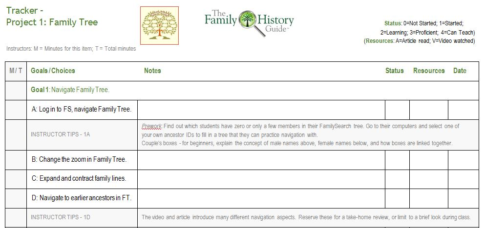

The Tracker sheets are downloadable Microsoft Word files, one for each Project in The Family History Guide. With Tracker sheets you can:
Note : Tracker sheets are available for individuals to download as well, so first check to see whether the learner has already filled out one or more Trackers. Also, to view or edit Tracker sheets on a Mac or iPad, you will need the Pages program or app.
Below is a sample from the Tracker sheet for Project 1: Family Tree. The Legend in the upper left explains the various items. The Notes column includes some Instructor Tips in gray, as well as dashes where you can add your own tips.
| Project 1: Family Tree | Project 2: Memories | Project 3: Descendants | Project 4: Discover |
| Project 5: Indexing | Project 6: Help | Project 7: Technology | Project 8: DNA | LDS |
| African-American | Asian American | Hispanic | Jewish | Native American |